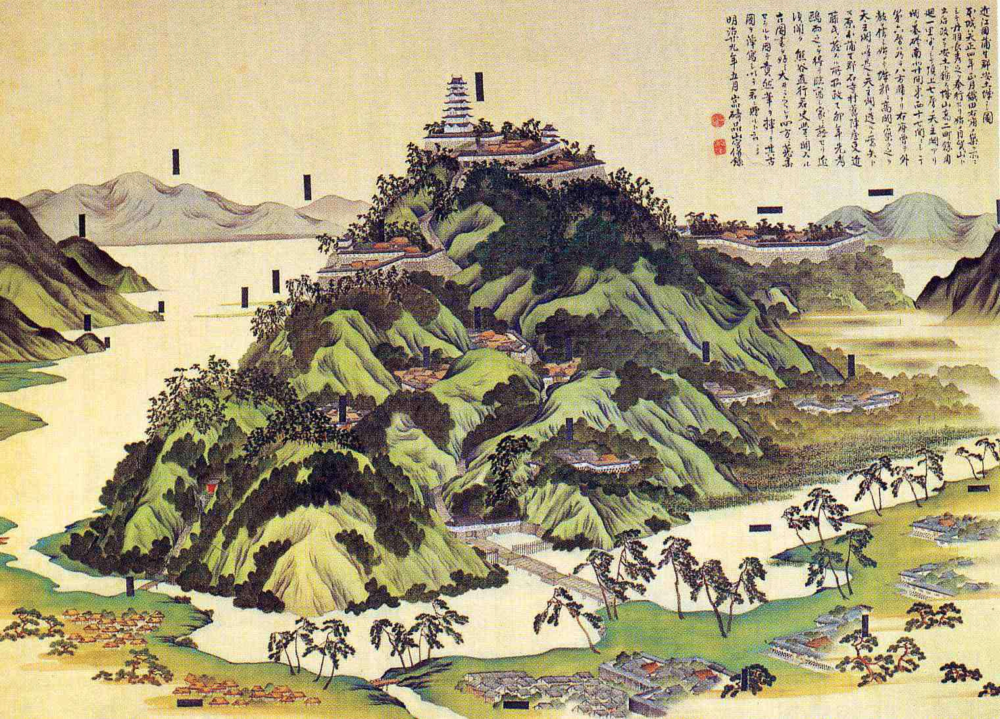
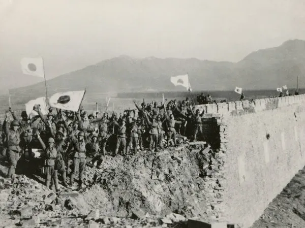
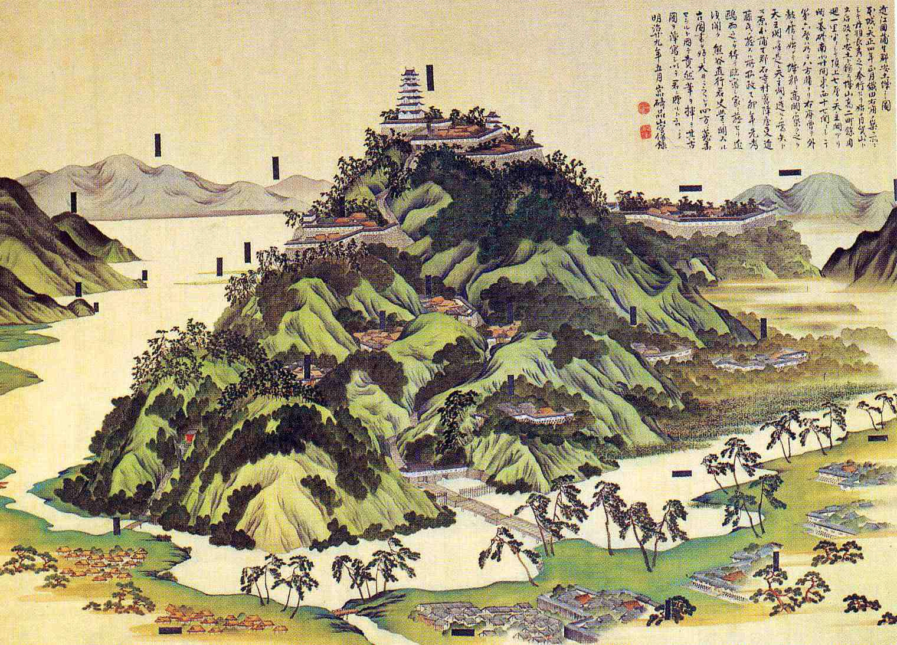
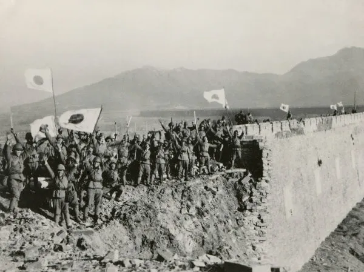

História
O Japão tem uma história rica e complexa que se estende por milênios. Sua civilização começou a se formar por volta de 10.000 a.C. com a cultura Jomon, seguida pela era Yayoi (300 a.C. – 300 d.C.), quando o cultivo de arroz e o uso de metal se popularizaram.
Período Medieval (794 - 1600)
Período Heian (794 - 1185): O Japão entrou em uma era de grande sofisticação cultural, com Kyoto se tornando a capital.Foi nesse período que a cultura aristocrática japonesa floresceu, com a criação de clássicos literários como "O Conto de Genji", de Murasaki Shikibu, considerado o primeiro romance da história mundial. No entanto, o poder político começou a enfraquecer, enquanto o clero budista e os militares ganhavam influência.
Período Kamakura (1185 - 1333): O período Kamakura marca o início do domínio dos samurais. O shogunato Kamakura foi o primeiro governo militar do Japão, que substituiu o sistema imperial centralizado. Durante essa época, os samurais dominaram a política e o código de honra bushido começou a tomar forma.
Período Muromachi (1336 - 1573): Conhecido também como Período Ashikaga, o Japão estava dividido entre vários senhores de guerra. A instabilidade política levou ao início de uma série de confrontos conhecidos como guerra civil, onde o poder estava nas mãos dos samurais e de clãs locais. O Japão também teve uma influência cultural da China, como o zen-budismo e o teatro Noh.
Segunda Guerra Mundial e Pós-Guerra
Segunda Guerra Mundial (1939 - 1945): Durante a Segunda Guerra Mundial, o Japão se alinhou com as Potências do Eixo, invadindo países como China, Coreia, Indochina e as Filipinas. A guerra culminou com os ataques a Pearl Harbor em 1941 e as bombardeios atômicos de Hiroshima e Nagasaki pelos Estados Unidos em 1945, que levaram à rendição do Japão e ao fim da guerra.
Período Pós-Guerra (1945 - presente): Após a guerra, o Japão foi ocupado pelos Estados Unidos sob a liderança do general Douglas MacArthur. O país passou por uma democratização, com uma nova constituição sendo adotada em 1947. O Japão se reergueu rapidamente após a guerra, tornando-se uma das economias mais poderosas do mundo nas décadas seguintes. A cultura japonesa também ganhou popularidade global, especialmente através de seu cinema, música e tecnologia.
 


